← 返回阅读库 · 原论文目录
论文讲解阅读文档 · 生成对抗网络GAN · v147
生成对抗网络GAN交互式可视化
视频时长 00:19:25；讲解文字 4,731 字符；提取讲解画面 331 张。按视频原顺序阅读，每段文字保留时间戳。
文字来自整段视频的自动语音转写，按自然停顿分段，并与 PPT / 论文页面 / 演示画面对齐。未将讲解压缩为摘要；术语、数字和口述公式请结合画面及原论文核对。 阅读稿已校正规范部分明确术语误识别；原始逐字稿和每处修改记录另行保留。
讲解画面为源视频截图（640×360），不是可编辑 PPT 文件。全片按每秒 2 帧扫描内容变化，逐步展开页保留；连续动画保留代表画面。清晰度受源视频限制。
下载完整资料包 · 含离线 HTML、PDF、Word、全部 PPT 画面和字幕。
原论文与材料
GAN Lab: Understanding Complex Deep Generative Models using Interactive Visual Experimentation · 下载完整 PDF（11 页）
Generative Adversarial Networks · 下载完整 PDF（9 页）
GAN Lab 官方交互演示 · 官方资料
视频演示的官方交互可视化。
演示音频备注
以下为整理备注，原音另附以便核对。
00:17:03–00:17:12 · 此处为插入的影视对白，已按原音补入转写；个别同音字可能存在误识别，原音另附。
00:17:33–00:17:38 · 此处为插入的影视对白，已按原音补入转写；个别同音字可能存在误识别，原音另附。
00:18:37–00:18:46 · 此处为插入的影视对白，已按原音补入转写；个别同音字可能存在误识别，原音另附。
00:19:18–00:19:25 · 片尾为简短插入人声/音效，词句未能可靠识别，原音另附。
按时间阅读
00:00:00–00:01:57 · 画面 001
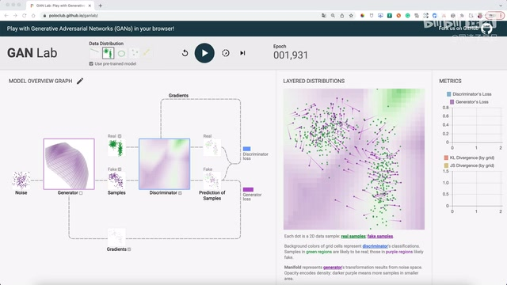
00:00:00–00:01:57 · 画面 001大家好,我是同济子豪兄从这个视频开启我们的生成对抗网络 GAN 系列的视频讲解接下来我会陆续发布 GAN 的论文精读系列视频和 OpenMMLab 图像生成算法库 MMGeneration 的代码实战教程我个人认为生成对抗网络是整个人工智能和深度学习领域最好玩最有学术和应用潜力而且最适合文科生和艺术生跨界的研究方向能做出很多酷炫好玩的应用比如图像生成风格迁移 AI 艺术创作黑白老照片的上色修复照片转成油画野马转成斑马黑夜转成白天简笔画的猫转成真猫模糊的图像转成高清图像手机的风景照转成莫奈的印象派的油画在我后续的视频中都会手把手带大家实现生成对抗神经网络也叫 GAN 网络听起来很简单你只需要给它输入海量的数据比如说几百万张人脸的图像它就能够生成出以假乱真能骗过人眼的假人脸图像
而且这些假图像并没有在原始数据中出现过这个人在世界上从来没有存在过但是他的照片却能以假乱真骗过人眼听起来很简单只要给他喂大量的数据训练他就可以了但是呢GAN 背后的数学原理非常复杂我也不太想一上来就苦哈哈的一头扎在公式论文算法和代码里边直到我发现这个网站可以直观交互式可视化的展示GAN 背后的算法直觉所以我决定把这个视频作为整个 GAN 系列的第一个视频那一方面呢希望带你开心入门一方面呢也希望后续讲论文和代码的时候多来几个捧场就是为了这点醋
00:01:57–00:02:01 · 画面 002
00:01:57–00:02:01 · 画面 002我才包着这顿饺子哎 改天请你们吃饺子啊
00:02:01–00:02:03 · 画面 003
00:02:01–00:02:03 · 画面 003这个网站呢叫做 GAN Lab
00:02:03–00:02:06 · 画面 004
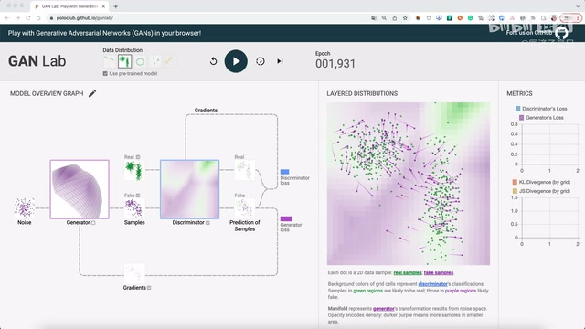
00:02:03–00:02:06 · 画面 004直接在浏览器中输入这个链接
00:02:06–00:02:13 · 画面 005
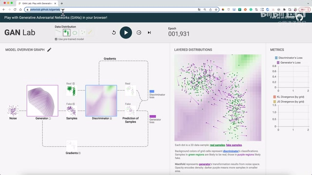
00:02:06–00:02:13 · 画面 005就可以打开不需要安装配置任何环境手机上都可以打开那左边呢是模型结构
00:02:13–00:02:19 · 画面 006
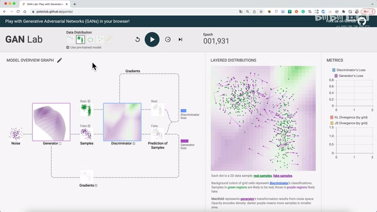
00:02:13–00:02:19 · 画面 006右边是生成结果那直接点击这个播放按钮
00:02:19–00:02:20 · 画面 007
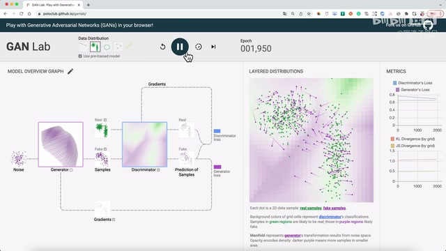
00:02:19–00:02:20 · 画面 007它就开始在线训练
00:02:20–00:02:21 · 画面 008
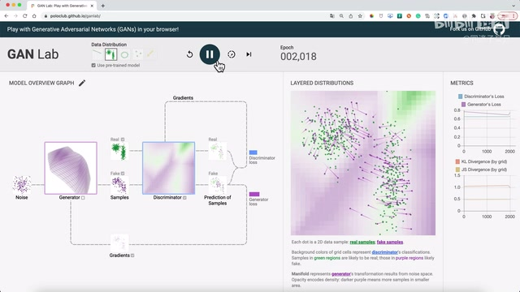
00:02:20–00:02:21 · 画面 008生成对抗网络了
00:02:21–00:02:25 · 画面 009
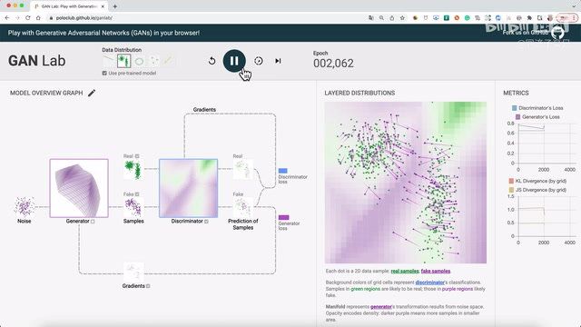
00:02:21–00:02:25 · 画面 009那上面呢有四种内置的数据分布
00:02:25–00:02:29 · 画面 010
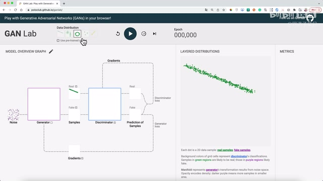
00:02:25–00:02:29 · 画面 010你也可以自己手画一个数据分布
00:02:29–00:02:31 · 画面 011
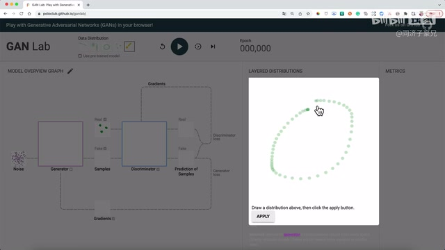
00:02:29–00:02:31 · 画面 01100:02:31–00:02:33 · 画面 012
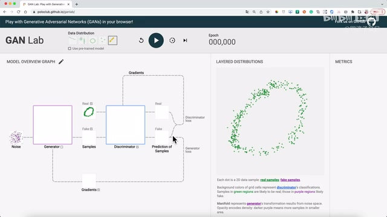
00:02:31–00:02:33 · 画面 012在这里可以勾选
00:02:33–00:02:35 · 画面 013
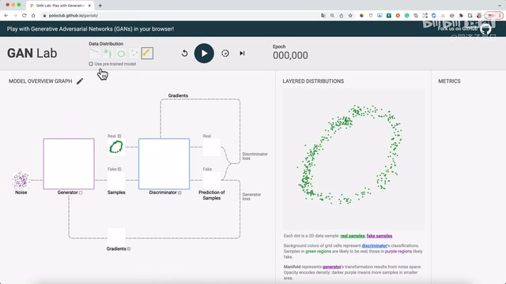
00:02:33–00:02:35 · 画面 013是否使用预训练模型
00:02:35–00:02:39 · 画面 014
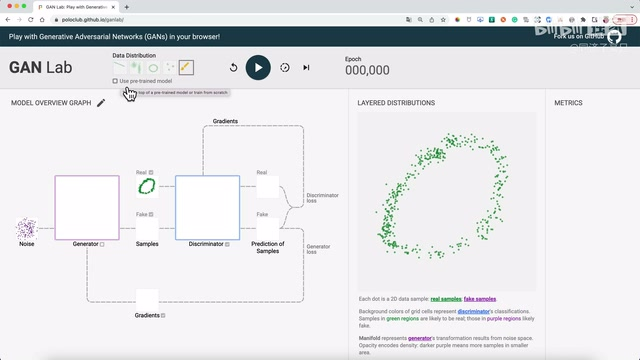
00:02:35–00:02:39 · 画面 014我选第一个分布不勾选
00:02:39–00:02:41 · 画面 015
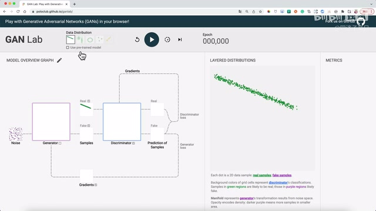
00:02:39–00:02:41 · 画面 015让它从头开始训练
00:02:41–00:02:43 · 画面 016
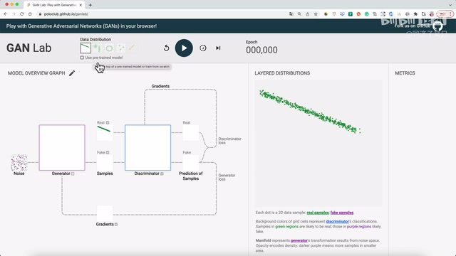
00:02:41–00:02:43 · 画面 016点击播放按钮开始训练
00:02:43–00:02:47 · 画面 017
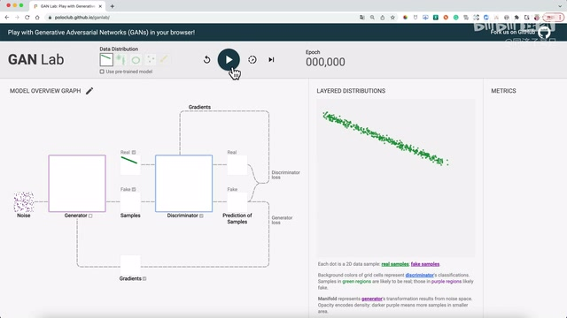
00:02:43–00:02:47 · 画面 017GAN 呢包含两个神经网络
00:02:47–00:02:51 · 画面 018
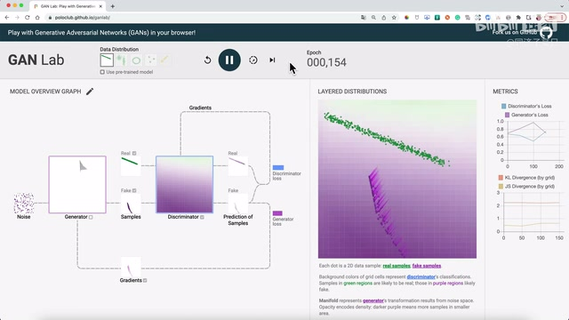
00:02:47–00:02:51 · 画面 018一个生成器 generator和一个判别器
00:02:51–00:02:52 · 画面 019
00:02:51–00:02:52 · 画面 019判别器 discriminator
00:02:52–00:02:53 · 画面 020
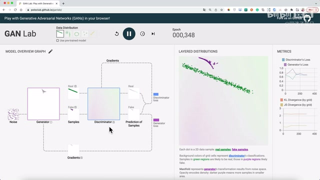
00:02:52–00:02:53 · 画面 02000:02:53–00:02:57 · 画面 021
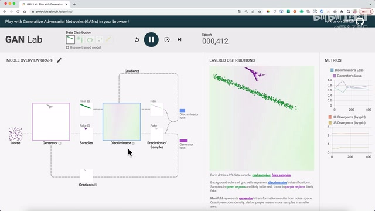
00:02:53–00:02:57 · 画面 021在这里它们都是神经网络我们可以点击这个笔的按钮
00:02:57–00:03:01 · 画面 022
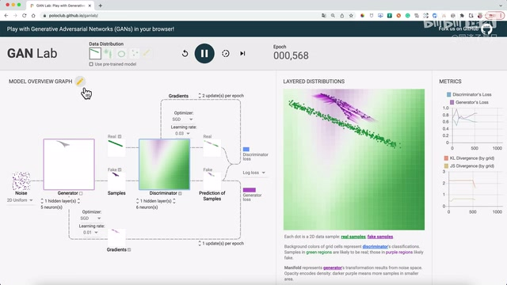
00:02:57–00:03:01 · 画面 022修改神经网络的隐含层层数和神经元的个数
00:03:01–00:03:05 · 画面 023
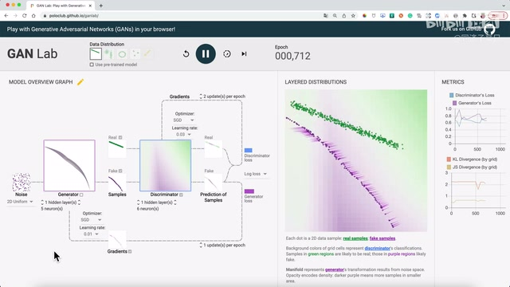
00:03:01–00:03:05 · 画面 023绿色的点是真实数据紫色的点是生成器生成的假数据这是真数据这个是假数据最终的训练效果是紫色点和绿色点逐渐的重合逐渐的融为一体它们逐渐服从同一个概率分布真假难辨如果绿色的点是真实的人脸图像那么紫色的点也会是人脸图像
00:03:05–00:03:09 · 画面 024
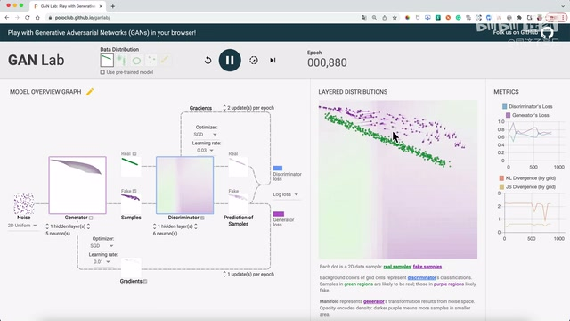
00:03:05–00:03:09 · 画面 02400:03:09–00:03:13 · 画面 025
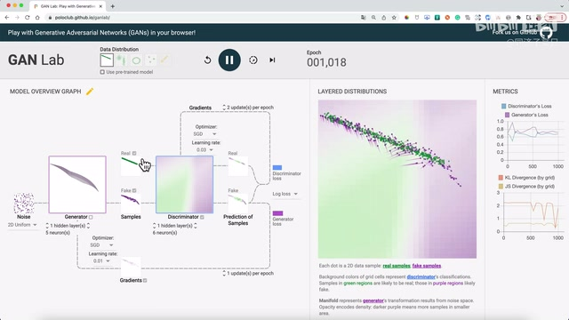
00:03:09–00:03:13 · 画面 02500:03:13–00:03:17 · 画面 026
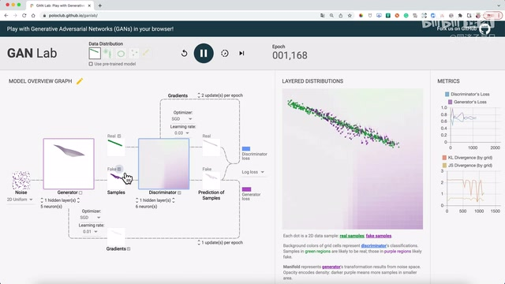
00:03:13–00:03:17 · 画面 02600:03:17–00:03:18 · 画面 027
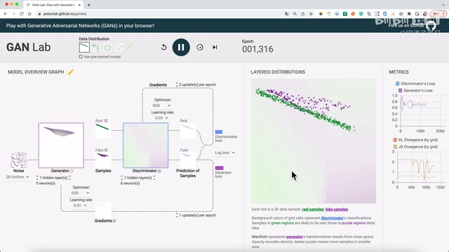
00:03:17–00:03:18 · 画面 02700:03:18–00:03:19 · 画面 028
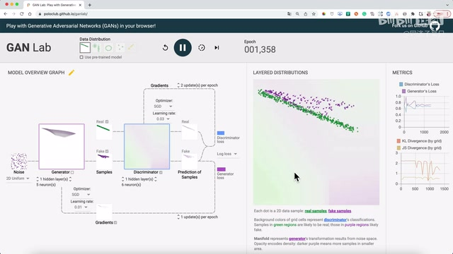
00:03:18–00:03:19 · 画面 02800:03:19–00:03:20 · 画面 029
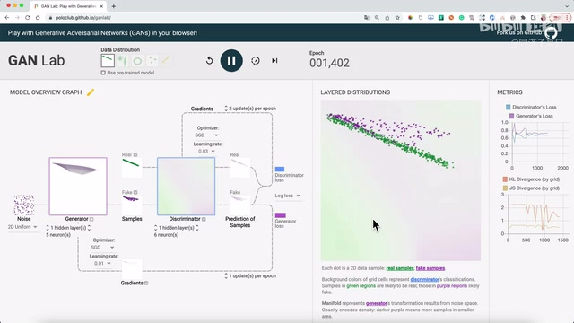
00:03:19–00:03:20 · 画面 02900:03:20–00:03:21 · 画面 030
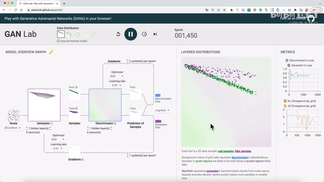
00:03:20–00:03:21 · 画面 03000:03:21–00:03:22 · 画面 031
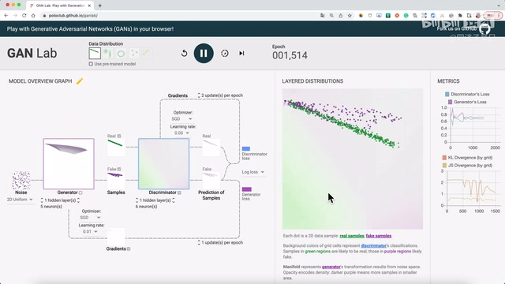
00:03:21–00:03:22 · 画面 03100:03:22–00:03:23 · 画面 032
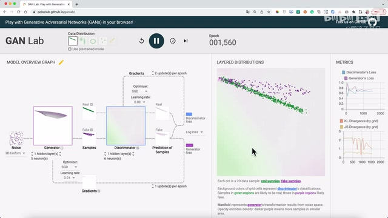
00:03:22–00:03:23 · 画面 03200:03:23–00:03:24 · 画面 033
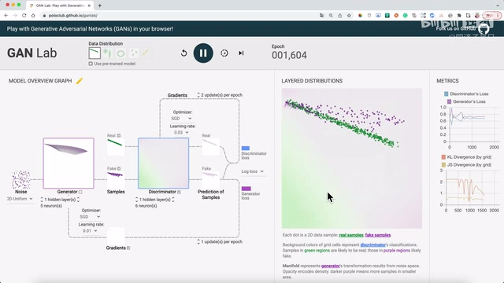
00:03:23–00:03:24 · 画面 03300:03:24–00:03:28 · 画面 034
00:03:24–00:03:28 · 画面 03400:03:28–00:03:31 · 画面 035
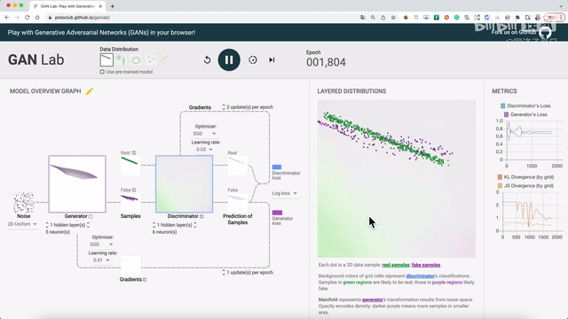
00:03:28–00:03:31 · 画面 03500:03:31–00:03:32 · 画面 036
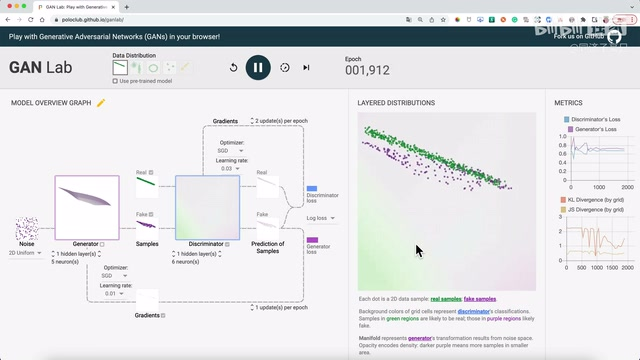
00:03:31–00:03:32 · 画面 03600:03:32–00:03:33 · 画面 037
00:03:32–00:03:33 · 画面 03700:03:33–00:03:34 · 画面 038
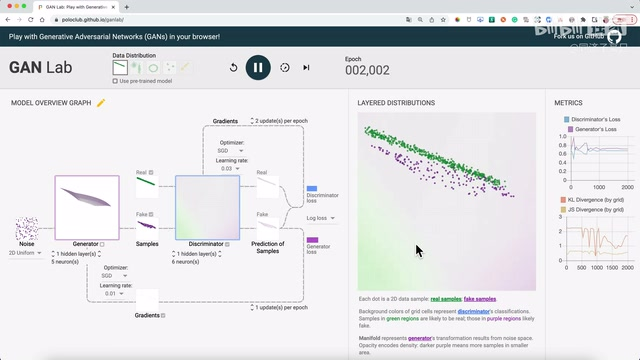
00:03:33–00:03:34 · 画面 03800:03:34–00:03:36 · 画面 039
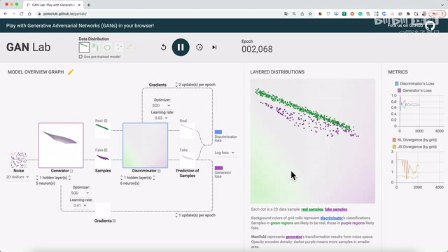
00:03:34–00:03:36 · 画面 039是假的人脸图像而且紫色点对应的这些人脸图像从来没有在世界上任何地方真实存在过但是会逼真的让人真假难辨这就是 GAN 的原理那我们来看看训练的细节换一个数据分布试试看这里手动的把神经网络的隐含层个数和每一层的神经元个数加多一些提升它的性能开始训练
00:03:36–00:03:37 · 画面 040
00:03:36–00:03:37 · 画面 04000:03:37–00:03:39 · 画面 041
00:03:37–00:03:39 · 画面 04100:03:39–00:03:40 · 画面 042
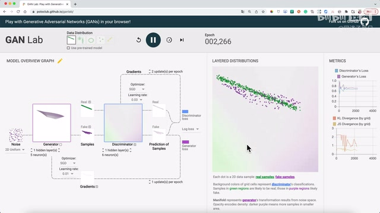
00:03:39–00:03:40 · 画面 04200:03:40–00:03:41 · 画面 043
00:03:40–00:03:41 · 画面 04300:03:41–00:03:42 · 画面 044
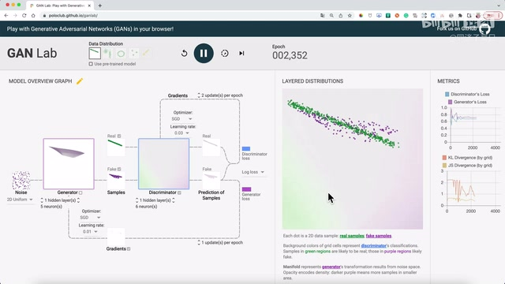
00:03:41–00:03:42 · 画面 04400:03:42–00:03:43 · 画面 045
00:03:42–00:03:43 · 画面 04500:03:43–00:03:45 · 画面 046
00:03:43–00:03:45 · 画面 04600:03:45–00:03:49 · 画面 047
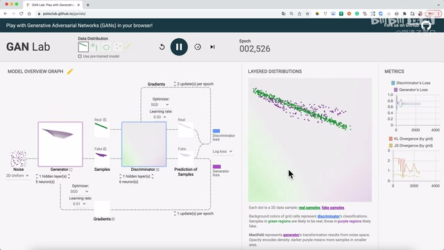
00:03:45–00:03:49 · 画面 04700:03:49–00:03:52 · 画面 048
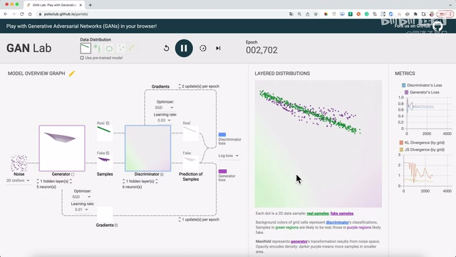
00:03:49–00:03:52 · 画面 04800:03:52–00:03:55 · 画面 049
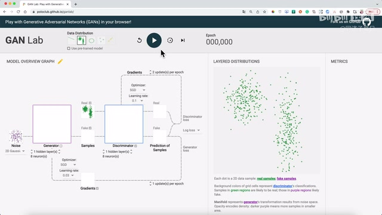
00:03:52–00:03:55 · 画面 04900:03:55–00:03:58 · 画面 050
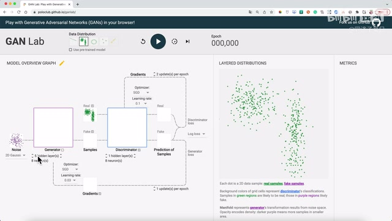
00:03:55–00:03:58 · 画面 05000:03:58–00:04:02 · 画面 051
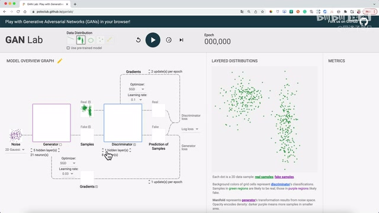
00:03:58–00:04:02 · 画面 05100:04:02–00:04:04 · 画面 052
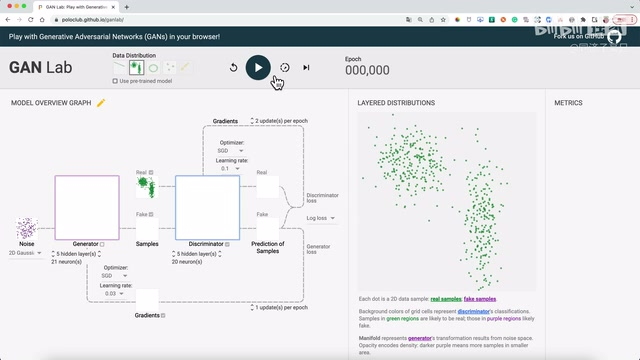
00:04:02–00:04:04 · 画面 05200:04:04–00:04:08 · 画面 053
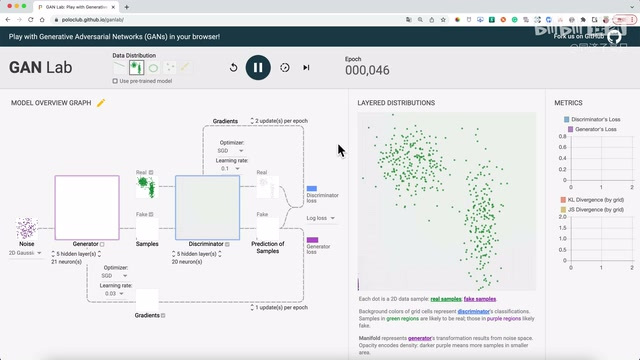
00:04:04–00:04:08 · 画面 053那判别器其实就是一个简单的二分类模型它的目标很明确就是区分真假数据也就是区分紫色点和绿色点那这里的紫色区域和绿色区域就是判别器当前学习到的真假数据的分类边界就是这个紫色区域和绿色区域那如果一个点落在了绿色区域那么判别器就认为它是真数据绿色越深
00:04:08–00:04:10 · 画面 054
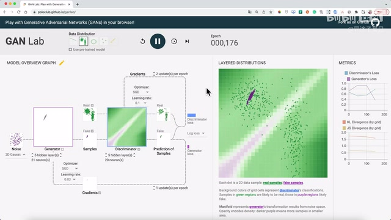
00:04:08–00:04:10 · 画面 05400:04:10–00:04:14 · 画面 055
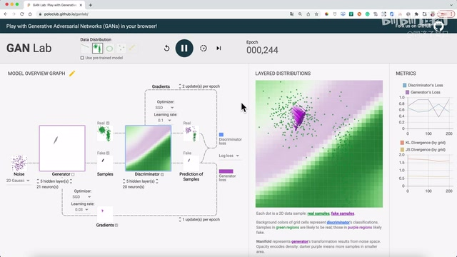
00:04:10–00:04:14 · 画面 05500:04:14–00:04:18 · 画面 056
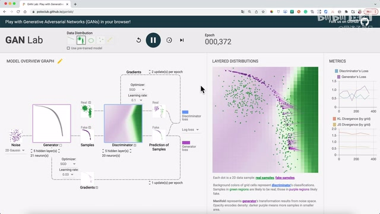
00:04:14–00:04:18 · 画面 05600:04:18–00:04:22 · 画面 057
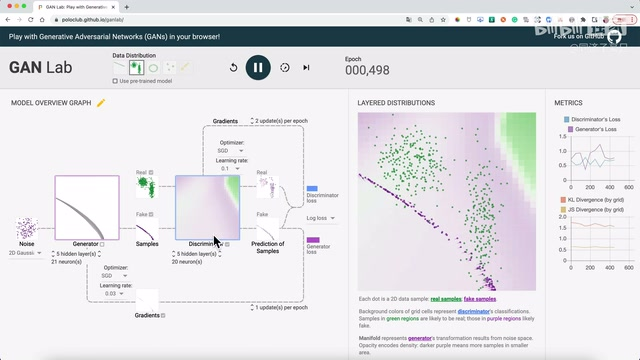
00:04:18–00:04:22 · 画面 05700:04:22–00:04:26 · 画面 058
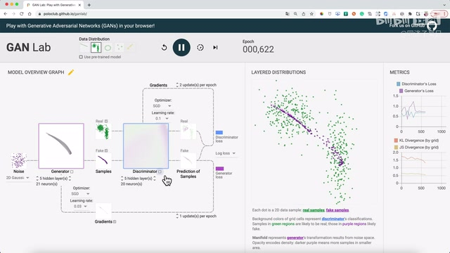
00:04:22–00:04:26 · 画面 05800:04:26–00:04:29 · 画面 059
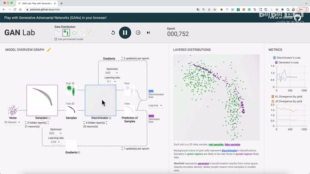
00:04:26–00:04:29 · 画面 05900:04:29–00:04:31 · 画面 060
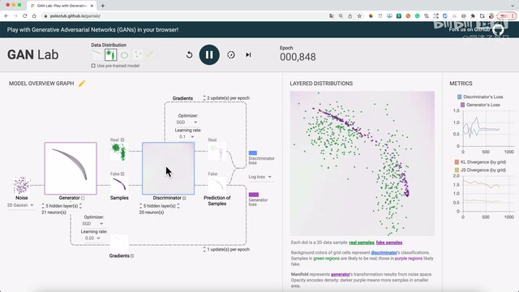
00:04:29–00:04:31 · 画面 06000:04:31–00:04:32 · 画面 061
00:04:31–00:04:32 · 画面 06100:04:32–00:04:34 · 画面 062
00:04:32–00:04:34 · 画面 062就认为它越真如果一个点落在了紫色区域那么判别器就认为它是假数据紫色越深就认为它越假
00:04:34–00:04:35 · 画面 063
00:04:34–00:04:35 · 画面 06300:04:35–00:04:39 · 画面 064
00:04:35–00:04:39 · 画面 06400:04:39–00:04:43 · 画面 065
00:04:39–00:04:43 · 画面 065给判别器输入这些真数据和假数据用它们的标签去训练它让它学习真假数据的区别用常规的机器学习的二分类交叉熵损失函数配合反向传播梯度下降算法就可以训练判别器神经网络中的权重参数了让它区分紫点和绿点的效果越来越好好 这是判别器就是一个简单的二分类模型
00:04:43–00:04:45 · 画面 066
00:04:43–00:04:45 · 画面 06600:04:45–00:04:46 · 画面 067
00:04:45–00:04:46 · 画面 06700:04:46–00:04:50 · 画面 068
00:04:46–00:04:50 · 画面 06800:04:50–00:04:54 · 画面 069
00:04:50–00:04:54 · 画面 06900:04:54–00:04:56 · 画面 070
00:04:54–00:04:56 · 画面 07000:04:56–00:05:13 · 画面 071
00:04:56–00:05:13 · 画面 071而生成器恰恰相反它是要指鹿为马是要努力欺骗判别器愚弄判别器努力生成让判别器误以为是真数据的假数据换句话说生成器是想让生成的紫点尽量往判别器的绿色区域移动那紫色点上的小尾巴这个小箭头就是当前这个数据的梯度优化方向
00:05:13–00:05:16 · 画面 072
00:05:13–00:05:16 · 画面 07200:05:16–00:05:23 · 画面 073
00:05:16–00:05:23 · 画面 07300:05:23–00:05:27 · 画面 074
00:05:23–00:05:27 · 画面 07400:05:27–00:05:28 · 画面 075
00:05:27–00:05:28 · 画面 07500:05:28–00:05:43 · 画面 076
00:05:28–00:05:43 · 画面 076就是说优化生成器神经网络中的权重使得它生成的紫点再往箭头方向移动移动挪一挪就更能骗过判别器了判别器就像抓假币的警察生成器就像造假币的罪犯让我想起周润发和郭富城演过的电影《无双》讲造假币的他们就是这样摩高一尺道高一丈双方都不断地交替学习进步
00:05:43–00:05:46 · 画面 077
00:05:43–00:05:46 · 画面 07700:05:46–00:05:54 · 画面 078
00:05:46–00:05:54 · 画面 07800:05:54–00:05:58 · 画面 079
00:05:54–00:05:58 · 画面 07900:05:58–00:05:59 · 画面 080
00:05:58–00:05:59 · 画面 08000:05:59–00:06:20 · 画面 081
00:05:59–00:06:20 · 画面 081像非洲大草原的猎豹和羚羊协同进化也像两个超级大国军备竞赛那我们用慢动作再来回放一下选择第一个数据分布加一些隐含层的个数开始训练点击这个按钮开启单步调试的模式上面的蓝色是训练判别器的步骤下面的紫色是训练生成器的步骤
00:06:20–00:06:21 · 画面 082
00:06:20–00:06:21 · 画面 08200:06:21–00:06:22 · 画面 083
00:06:21–00:06:22 · 画面 08300:06:22–00:06:25 · 画面 084
00:06:22–00:06:25 · 画面 08400:06:25–00:06:27 · 画面 085
00:06:25–00:06:27 · 画面 08500:06:27–00:06:30 · 画面 086
00:06:27–00:06:30 · 画面 08600:06:30–00:06:32 · 画面 087
00:06:30–00:06:32 · 画面 08700:06:32–00:06:33 · 画面 088
00:06:32–00:06:33 · 画面 08800:06:33–00:06:34 · 画面 089
00:06:33–00:06:34 · 画面 08900:06:34–00:06:40 · 画面 090
00:06:34–00:06:40 · 画面 09000:06:40–00:06:42 · 画面 091
00:06:40–00:06:42 · 画面 09100:06:42–00:06:54 · 画面 092
00:06:42–00:06:54 · 画面 092它们两个交替训练先训练判别器这个时候生成器是固定的再训练生成器这个时候判别器是固定的我们先说训练判别器吧先从噪声空间采样一些随机数让生成器生成一些假图像用真图像和假图像作为判别器二分类的训练数据
00:06:54–00:06:58 · 画面 093
00:06:54–00:06:58 · 画面 09300:06:58–00:07:00 · 画面 094
00:06:58–00:07:00 · 画面 09400:07:00–00:07:02 · 画面 095
00:07:00–00:07:02 · 画面 09500:07:02–00:07:05 · 画面 096
00:07:02–00:07:05 · 画面 09600:07:05–00:07:07 · 画面 097
00:07:05–00:07:07 · 画面 097还有标签计算判别器的二分类交叉熵损失函数然后通过反向传播梯度下降计算判别器神经网络每个权重的梯度然后优化更新这些权重就训练好了判别器的神经网络获得了新的紫色和绿色的分类边界再训练生成器这个时候判别器是固定的先从噪声空间采样让生成器生成一些假图像
00:07:07–00:07:11 · 画面 098
00:07:07–00:07:11 · 画面 09800:07:11–00:07:12 · 画面 099
00:07:11–00:07:12 · 画面 09900:07:12–00:07:16 · 画面 100
00:07:12–00:07:16 · 画面 10000:07:16–00:07:17 · 画面 101
00:07:16–00:07:17 · 画面 10100:07:17–00:07:20 · 画面 102
00:07:17–00:07:20 · 画面 10200:07:20–00:07:22 · 画面 103
00:07:20–00:07:22 · 画面 10300:07:22–00:07:25 · 画面 104
00:07:22–00:07:25 · 画面 10400:07:25–00:07:27 · 画面 105
00:07:25–00:07:27 · 画面 10500:07:27–00:07:30 · 画面 106
00:07:27–00:07:30 · 画面 10600:07:30–00:07:33 · 画面 107
00:07:30–00:07:33 · 画面 10700:07:33–00:07:35 · 画面 108
00:07:33–00:07:35 · 画面 10800:07:35–00:07:38 · 画面 109
00:07:35–00:07:38 · 画面 109然后只把这些假图像输入到判别器中按照最大化判别器损失函数的原则按照最大程度误导判别器的原则求出梯度
00:07:38–00:07:40 · 画面 110
00:07:38–00:07:40 · 画面 11000:07:40–00:07:43 · 画面 111
00:07:40–00:07:43 · 画面 11100:07:43–00:07:45 · 画面 112
00:07:43–00:07:45 · 画面 11200:07:45–00:07:48 · 画面 113
00:07:45–00:07:48 · 画面 11300:07:48–00:07:50 · 画面 114
00:07:48–00:07:50 · 画面 114然后更新优化生成器神经网络的权重使得这些紫色的点往最大程度误导判别器的方向移动也就是往绿色区域移动那在 GAN 的原始论文中是每训练两次判别器训练一次生成器那在这里也是一样的那生成器和判别器就是这样互相攀比互相内卷对方最后拟合出了真实的数据分布
00:07:50–00:07:54 · 画面 115
00:07:50–00:07:54 · 画面 11500:07:54–00:07:55 · 画面 116
00:07:54–00:07:55 · 画面 11600:07:55–00:07:58 · 画面 117
00:07:55–00:07:58 · 画面 11700:07:58–00:08:02 · 画面 118
00:07:58–00:08:02 · 画面 11800:08:02–00:08:05 · 画面 119
00:08:02–00:08:05 · 画面 11900:08:05–00:08:07 · 画面 120
00:08:05–00:08:07 · 画面 12000:08:07–00:08:10 · 画面 121
00:08:07–00:08:10 · 画面 12100:08:10–00:08:11 · 画面 122
00:08:10–00:08:11 · 画面 12200:08:11–00:08:13 · 画面 123
00:08:11–00:08:13 · 画面 12300:08:13–00:08:16 · 画面 124
00:08:13–00:08:16 · 画面 12400:08:16–00:08:20 · 画面 125
00:08:16–00:08:20 · 画面 125我们还可以在这里修改噪声可以把均匀的噪声分布换成高斯的噪声分布重新训练一下看看效果让我想起了这个射雕英雄传里边老顽童周伯通被黄药师困在桃花岛岩洞里边 15 年为了打发时间让自己的左手和右手打架最终练成了绝顶神功左右手互搏之术在这里也是一样的
00:08:20–00:08:21 · 画面 126
00:08:20–00:08:21 · 画面 12600:08:21–00:08:23 · 画面 127
00:08:21–00:08:23 · 画面 12700:08:23–00:08:25 · 画面 128
00:08:23–00:08:25 · 画面 12800:08:25–00:08:26 · 画面 129
00:08:25–00:08:26 · 画面 12900:08:26–00:08:28 · 画面 130
00:08:26–00:08:28 · 画面 13000:08:28–00:08:30 · 画面 131
00:08:28–00:08:30 · 画面 13100:08:30–00:08:31 · 画面 132
00:08:30–00:08:31 · 画面 13200:08:31–00:08:33 · 画面 133
00:08:31–00:08:33 · 画面 13300:08:33–00:08:34 · 画面 134
00:08:33–00:08:34 · 画面 13400:08:34–00:08:36 · 画面 135
00:08:34–00:08:36 · 画面 13500:08:36–00:08:38 · 画面 136
00:08:36–00:08:38 · 画面 13600:08:38–00:08:39 · 画面 137
00:08:38–00:08:39 · 画面 13700:08:39–00:08:41 · 画面 138
00:08:39–00:08:41 · 画面 13800:08:41–00:08:42 · 画面 139
00:08:41–00:08:42 · 画面 13900:08:42–00:08:45 · 画面 140
00:08:42–00:08:45 · 画面 14000:08:45–00:08:47 · 画面 141
00:08:45–00:08:47 · 画面 14100:08:47–00:08:48 · 画面 142
00:08:47–00:08:48 · 画面 14200:08:48–00:08:51 · 画面 143
00:08:48–00:08:51 · 画面 143点击这个按钮可以只训练生成器或者只训练判别器我们还是以第一个数据分布为例如果保持判别器不变只训练生成器就是说紫色和绿色的区分边界不变就是这个绿色和紫色区域不变只训练
00:08:51–00:08:52 · 画面 144
00:08:51–00:08:52 · 画面 14400:08:52–00:08:56 · 画面 145
00:08:52–00:08:56 · 画面 14500:08:56–00:08:57 · 画面 146
00:08:56–00:08:57 · 画面 14600:08:57–00:09:00 · 画面 147
00:08:57–00:09:00 · 画面 14700:09:00–00:09:05 · 画面 148
00:09:00–00:09:05 · 画面 14800:09:05–00:09:07 · 画面 149
00:09:05–00:09:07 · 画面 14900:09:07–00:09:09 · 画面 150
00:09:07–00:09:09 · 画面 15000:09:09–00:09:12 · 画面 151
00:09:09–00:09:12 · 画面 15100:09:12–00:09:15 · 画面 152
00:09:12–00:09:15 · 画面 152生成器也就是说只有紫色的点移动会发生什么呢那就是说紫色的点会一直往绿色区域走最终会无限的欺骗判别器你看所有紫色的梯度都指向了绿色区域它们都会往绿色区域优化因为这样能够使得判别器最大程度的被误判被愚弄那如果保持生成器不变只训练判别器呢那这个时候紫色的点是不动的
00:09:15–00:09:17 · 画面 153
00:09:15–00:09:17 · 画面 15300:09:17–00:09:21 · 画面 154
00:09:17–00:09:21 · 画面 15400:09:21–00:09:22 · 画面 155
00:09:21–00:09:22 · 画面 15500:09:22–00:09:24 · 画面 156
00:09:22–00:09:24 · 画面 15600:09:24–00:09:29 · 画面 157
00:09:24–00:09:29 · 画面 15700:09:29–00:09:30 · 画面 158
00:09:29–00:09:30 · 画面 15800:09:30–00:09:35 · 画面 159
00:09:30–00:09:35 · 画面 15900:09:35–00:09:37 · 画面 160
00:09:35–00:09:37 · 画面 16000:09:37–00:09:45 · 画面 161
00:09:37–00:09:45 · 画面 161但是紫色和绿色的区分边界会发生变化
00:09:45–00:09:46 · 画面 162
00:09:45–00:09:46 · 画面 16200:09:46–00:09:47 · 画面 163
00:09:46–00:09:47 · 画面 16300:09:47–00:09:49 · 画面 164
00:09:47–00:09:49 · 画面 164因为判别器学习到的就是这个边界
00:09:49–00:09:50 · 画面 165
00:09:49–00:09:50 · 画面 165训练判别器就是在改变这个紫色和绿色的边界
00:09:50–00:09:52 · 画面 166
00:09:50–00:09:52 · 画面 16600:09:52–00:09:55 · 画面 167
00:09:52–00:09:55 · 画面 167如果一味的无止境的训练判别器下去的话
00:09:55–00:09:57 · 画面 168
00:09:55–00:09:57 · 画面 16800:09:57–00:10:02 · 画面 169
00:09:57–00:10:02 · 画面 169最终这个边界会无限的近位分明紫色点的这个梯度也会越来越大
00:10:02–00:10:04 · 画面 170
00:10:02–00:10:04 · 画面 17000:10:04–00:10:07 · 画面 171
00:10:04–00:10:07 · 画面 171因为绿色离它远了它当然就更想往绿色走了
00:10:07–00:10:11 · 画面 172
00:10:07–00:10:11 · 画面 172再指训练生成器
00:10:11–00:10:12 · 画面 173
00:10:11–00:10:12 · 画面 173紫点往绿色的区域跑
00:10:12–00:10:13 · 画面 174
00:10:12–00:10:13 · 画面 17400:10:13–00:10:16 · 画面 175
00:10:13–00:10:16 · 画面 175再指训练判别器
00:10:16–00:10:23 · 画面 176
00:10:16–00:10:23 · 画面 176紫色和绿色的区域边界就变分明了也可以点这个 boss 交替训练
00:10:23–00:10:25 · 画面 177
00:10:23–00:10:25 · 画面 17700:10:25–00:10:26 · 画面 178
00:10:25–00:10:26 · 画面 17800:10:26–00:10:28 · 画面 179
00:10:26–00:10:28 · 画面 179它们两个就像跳华尔兹一样
00:10:28–00:10:30 · 画面 180
00:10:28–00:10:30 · 画面 180你来我往
00:10:30–00:10:34 · 画面 181
00:10:30–00:10:34 · 画面 181它跑我就追它跑我就追就越跑越远了它跑我就堵
00:10:34–00:10:38 · 画面 182
00:10:34–00:10:38 · 画面 182它跑我就堵就给堵回来了
00:10:38–00:10:42 · 画面 183
00:10:38–00:10:42 · 画面 183就这么简单对就这么简单最终
00:10:42–00:10:46 · 画面 184
00:10:42–00:10:46 · 画面 184最终紫点和绿点会融为一体
00:10:46–00:10:50 · 画面 185
00:10:46–00:10:50 · 画面 185这种互相内卷互相占对方便宜的这种博弈状态
00:10:50–00:10:54 · 画面 186
00:10:50–00:10:54 · 画面 186称之为二人极大极小零和博弈
00:10:54–00:10:58 · 画面 187
00:10:54–00:10:58 · 画面 187判别器想要极大化二分类的准确率，而生成器想要极小化判别器的二分类准确率，所以二人是极大极小博弈。我多吃一口，你就少吃一口，最后咱俩吃的总和是零，所以叫零和博弈。那博弈到了白热化的最后
00:10:58–00:10:59 · 画面 188
00:10:58–00:10:59 · 画面 18800:10:59–00:11:01 · 画面 189
00:10:59–00:11:01 · 画面 18900:11:01–00:11:02 · 画面 190
00:11:01–00:11:02 · 画面 19000:11:02–00:11:03 · 画面 191
00:11:02–00:11:03 · 画面 19100:11:03–00:11:04 · 画面 192
00:11:03–00:11:04 · 画面 19200:11:04–00:11:05 · 画面 193
00:11:04–00:11:05 · 画面 19300:11:05–00:11:06 · 画面 194
00:11:05–00:11:06 · 画面 19400:11:06–00:11:07 · 画面 195
00:11:06–00:11:07 · 画面 19500:11:07–00:11:09 · 画面 196
00:11:07–00:11:09 · 画面 19600:11:09–00:11:10 · 画面 197
00:11:09–00:11:10 · 画面 19700:11:10–00:11:11 · 画面 198
00:11:10–00:11:11 · 画面 19800:11:11–00:11:13 · 画面 199
00:11:11–00:11:13 · 画面 19900:11:13–00:11:15 · 画面 200
00:11:13–00:11:15 · 画面 20000:11:15–00:11:16 · 画面 201
00:11:15–00:11:16 · 画面 20100:11:16–00:11:18 · 画面 202
00:11:16–00:11:18 · 画面 202比如说现在双方就都很强了，判别器完全无法区分真假数据，生成器也达到了造假的极限，谁也不可能再多占对方一口便宜了。此时就达到了博弈论中的纳什均衡。我们可以在这里把学习率改得更小一点，让它小碎步再优化优化
00:11:18–00:11:33 · 画面 203
00:11:18–00:11:33 · 画面 20300:11:33–00:11:34 · 画面 204
00:11:33–00:11:34 · 画面 20400:11:34–00:11:36 · 画面 205
00:11:34–00:11:36 · 画面 20500:11:36–00:11:37 · 画面 206
00:11:36–00:11:37 · 画面 20600:11:37–00:11:43 · 画面 207
00:11:37–00:11:43 · 画面 207纳什均衡这个状态一旦达到了，他们谁都不可能再更进一步了。纳什是研究博弈论的经济学家，1994 年诺贝尔经济学奖的获得者。有一部电影叫《美丽心灵》讲的就是他的故事，强烈推荐大家看一看。到了纳什均衡收敛的时候，我们可以扔掉这个判别器，直接用生成器生成的假数据，这个数据就足以以假乱真了
00:11:43–00:11:47 · 画面 208
00:11:43–00:11:47 · 画面 20800:11:47–00:11:51 · 画面 209
00:11:47–00:11:51 · 画面 20900:11:51–00:11:55 · 画面 210
00:11:51–00:11:55 · 画面 21000:11:55–00:11:57 · 画面 211
00:11:55–00:11:57 · 画面 21100:11:57–00:11:58 · 画面 212
00:11:57–00:11:58 · 画面 21200:11:58–00:12:02 · 画面 213
00:11:58–00:12:02 · 画面 21300:12:02–00:12:04 · 画面 214
00:12:02–00:12:04 · 画面 21400:12:04–00:12:13 · 画面 215
00:12:04–00:12:13 · 画面 215就好比这个时候把紫点拿出来那么它就是一个以假乱真的假数据
00:12:13–00:12:14 · 画面 216
00:12:13–00:12:14 · 画面 216那这个对抗学习机制的精妙之处就在于
00:12:14–00:12:18 · 画面 217
00:12:14–00:12:18 · 画面 217我们坐在屏幕前就点了几下
00:12:18–00:12:23 · 画面 218
00:12:18–00:12:23 · 画面 218什么都没有做只是提供了一大堆真数据
00:12:23–00:12:26 · 画面 219
00:12:23–00:12:26 · 画面 219就是绿点
00:12:26–00:12:34 · 画面 220
00:12:26–00:12:34 · 画面 220那比如说提供几百万张真实的人脸图片或者真实的草莓图片没有任何辅助的标注和干预
00:12:34–00:12:37 · 画面 221
00:12:34–00:12:37 · 画面 221而生成器呢最后竟然真的拟合出了真实数据本身的概率分布
00:12:37–00:12:41 · 画面 222
00:12:37–00:12:41 · 画面 22200:12:41–00:12:49 · 画面 223
00:12:41–00:12:49 · 画面 223非常的神奇并且能够从这个分布中采样出并不真实存在却足以以假乱真的假数据验品是个好东西
00:12:49–00:12:53 · 画面 224
00:12:49–00:12:53 · 画面 224验品是个好东西
00:12:53–00:12:56 · 画面 225
00:12:53–00:12:56 · 画面 225走几步走几步那我再详细的解释一遍
00:12:56–00:13:00 · 画面 226
00:12:56–00:13:00 · 画面 226真实的数据就是这个绿点
00:13:00–00:13:04 · 画面 227
00:13:00–00:13:04 · 画面 227它服从一个潜在的真实数据概率分布那以现在的二维平面直角坐标系而言
00:13:04–00:13:18 · 画面 228
00:13:04–00:13:18 · 画面 228每一个点的坐标由 X 和 Y 两个坐标确定那你可以把 X 想象成身高Y 想象成体重那每一个点就代表了一个人
00:13:18–00:13:20 · 画面 229
00:13:18–00:13:20 · 画面 229那身高呢服从一个一维概率分布
00:13:20–00:13:37 · 画面 230
00:13:20–00:13:37 · 画面 230那比如一米六的人比较多两米三的人就比较少那体重外呢也服从一个一维概率分布，120 斤的人比较多，240 斤的人就比较少。所以绿点服从一个二维概率分布。那生成器造的这个假数据，也就是紫点，它也服从另外一个潜在的假数据概率分布，也是一个二维概率分布。那对应的就是这个图像里边在变的这个紫色的流形流水的流形状的形
00:13:37–00:13:39 · 画面 231
00:13:37–00:13:39 · 画面 23100:13:39–00:13:47 · 画面 232
00:13:39–00:13:47 · 画面 23200:13:47–00:13:49 · 画面 233
00:13:47–00:13:49 · 画面 23300:13:49–00:13:54 · 画面 234
00:13:49–00:13:54 · 画面 234右下角的 manifold 就是流形的意思。这个假数据它也是一个二维的概率分布，同样 X 是身高，Y 是体重。有的地方稀疏，有的地方密集。紫色的点就是从紫色的流形分布中采样得到的。生成器的厉害之处就在于让紫色的流形或者说假数据的概率分布最终和真数据的概率分布完全重合了
00:13:54–00:13:56 · 画面 235
00:13:54–00:13:56 · 画面 23500:13:56–00:14:03 · 画面 236
00:13:56–00:14:03 · 画面 23600:14:03–00:14:05 · 画面 237
00:14:03–00:14:05 · 画面 23700:14:05–00:14:16 · 画面 238
00:14:05–00:14:16 · 画面 23800:14:16–00:14:18 · 画面 239
00:14:16–00:14:18 · 画面 23900:14:18–00:14:23 · 画面 240
00:14:18–00:14:23 · 画面 24000:14:23–00:14:29 · 画面 241
00:14:23–00:14:29 · 画面 241鲁迅说吃进去的是草挤出来的是奶生成器也很伟大
00:14:29–00:14:32 · 画面 242
00:14:29–00:14:32 · 画面 242它输入的是噪声的随机数
00:14:32–00:14:36 · 画面 243
00:14:32–00:14:36 · 画面 243输出的是紫点就是假数据的 X 坐标和 Y 坐标
00:14:36–00:14:40 · 画面 244
00:14:36–00:14:40 · 画面 244并且它还拟合出了流形的概率分布
00:14:40–00:14:41 · 画面 245
00:14:40–00:14:41 · 画面 245紫点就服从这个概率分布
00:14:41–00:14:44 · 画面 246
00:14:41–00:14:44 · 画面 24600:14:44–00:14:49 · 画面 247
00:14:44–00:14:49 · 画面 247紫色深的地方采样出紫点的概率就大紫色浅的地方采样出紫点的概率就小
00:14:49–00:14:50 · 画面 248
00:14:49–00:14:50 · 画面 24800:14:50–00:14:52 · 画面 249
00:14:50–00:14:52 · 画面 249你看可以点击这个框
00:14:52–00:14:54 · 画面 250
00:14:52–00:14:54 · 画面 25000:14:54–00:14:55 · 画面 251
00:14:54–00:14:55 · 画面 251把这个流形覆盖在空间里边
00:14:55–00:14:59 · 画面 252
00:14:55–00:14:59 · 画面 252可以看出来
00:14:59–00:15:03 · 画面 253
00:14:59–00:15:03 · 画面 253也就是说紫点服从紫色流形的概率分布
00:15:03–00:15:04 · 画面 254
00:15:03–00:15:04 · 画面 25400:15:04–00:15:08 · 画面 255
00:15:04–00:15:08 · 画面 255那训练若干轮之后紫色流形的概率分布
00:15:08–00:15:10 · 画面 256
00:15:08–00:15:10 · 画面 256逐渐趋近于真实数据绿点的概率分布
00:15:10–00:15:13 · 画面 257
00:15:10–00:15:13 · 画面 257最终假做真实真亦假
00:15:13–00:15:18 · 画面 258
00:15:13–00:15:18 · 画面 258变成了连观音菩萨都分不清的六二迷猴黄老爷见笑
00:15:18–00:15:22 · 画面 259
00:15:18–00:15:22 · 画面 259马某走南闯北在九个地方做过现场
00:15:22–00:15:26 · 画面 260
00:15:22–00:15:26 · 画面 260靠的就是以假乱真鱼目混珠之章法
00:15:26–00:15:28 · 画面 261
00:15:26–00:15:28 · 画面 26100:15:28–00:15:34 · 画面 262
00:15:28–00:15:34 · 画面 262那这个网站它只展示了二维数据那在真实场景中会复杂很多绿点服从的真实数据的概率分布
00:15:34–00:15:43 · 画面 263
00:15:34–00:15:43 · 画面 263会非常的复杂比如说几百万张真实人脸的照片它服从的概率分布是不可能被计算出来的
00:15:43–00:15:54 · 画面 264
00:15:43–00:15:54 · 画面 264那么东厂破不了的案由西厂来破东厂不敢管的事我西厂管我们算不出来但是 GAN 它能拟合出来只要它的神经网络的拟合能力足够强
00:15:54–00:15:59 · 画面 265
00:15:54–00:15:59 · 画面 265它就能拟合出来好 点击这个笔的按钮
00:15:59–00:16:03 · 画面 266
00:15:59–00:16:03 · 画面 266我们还是把它的这个神经网络的隐含层个数
00:16:03–00:16:04 · 画面 267
00:16:03–00:16:04 · 画面 26700:16:04–00:16:08 · 画面 268
00:16:04–00:16:08 · 画面 268和神经元的个数调大一些
00:16:08–00:16:09 · 画面 269
00:16:08–00:16:09 · 画面 26900:16:09–00:16:12 · 画面 270
00:16:09–00:16:12 · 画面 270那这个就能增加神经网络的
00:16:12–00:16:13 · 画面 271
00:16:12–00:16:13 · 画面 271capacity 或者叫网络的容量
00:16:13–00:16:15 · 画面 272
00:16:13–00:16:15 · 画面 272拟合高维空间的表达能力
00:16:15–00:16:19 · 画面 273
00:16:15–00:16:19 · 画面 27300:16:19–00:16:22 · 画面 274
00:16:19–00:16:22 · 画面 274那默认的神经网络呢只有一个隐含层
00:16:22–00:16:26 · 画面 275
00:16:22–00:16:26 · 画面 275八个神经元这个结构其实非常的简陋你也可以修改随机梯度下降的优化器
00:16:26–00:16:30 · 画面 276
00:16:26–00:16:30 · 画面 276初始的学习率
00:16:30–00:16:31 · 画面 277
00:16:30–00:16:31 · 画面 277损失函数
00:16:31–00:16:34 · 画面 278
00:16:31–00:16:34 · 画面 278这些都是可以修改的那我们现在自己手绘一个
00:16:34–00:16:35 · 画面 279
00:16:34–00:16:35 · 画面 27900:16:35–00:16:39 · 画面 280
00:16:35–00:16:39 · 画面 280椭圆环形的数据分布试试看
00:16:39–00:16:43 · 画面 281
00:16:39–00:16:43 · 画面 281好把神经元个数增加一下
00:16:43–00:16:45 · 画面 282
00:16:43–00:16:45 · 画面 28200:16:45–00:16:49 · 画面 283
00:16:45–00:16:49 · 画面 283那初始学习率呢我们设置的大一点吧
00:16:49–00:16:50 · 画面 284
00:16:49–00:16:50 · 画面 284让他大踏步前进
00:16:50–00:16:51 · 画面 285
00:16:50–00:16:51 · 画面 2850.1
00:16:51–00:16:52 · 画面 286
00:16:51–00:16:52 · 画面 28600:16:52–00:16:53 · 画面 287
00:16:52–00:16:53 · 画面 287好
00:16:53–00:16:54 · 画面 288
00:16:53–00:16:54 · 画面 288开始训练
00:16:54–00:16:58 · 画面 289
00:16:54–00:16:58 · 画面 289那他当然也会经常犯错啊
00:16:58–00:17:02 · 画面 290
00:16:58–00:17:02 · 画面 290难圆被折不要着急
00:17:02–00:17:06 · 画面 291
00:17:02–00:17:06 · 画面 291慢慢等一等先发之人不急
00:17:06–00:17:10 · 画面 292
00:17:06–00:17:10 · 画面 292跟他耍耍不急跟他耍耍算成算成
00:17:10–00:17:12 · 画面 293
00:17:10–00:17:12 · 画面 29300:17:12–00:17:15 · 画面 294
00:17:12–00:17:15 · 画面 294到了快要收敛的时候我们在等待这个时机
00:17:15–00:17:17 · 画面 295
00:17:15–00:17:17 · 画面 29500:17:17–00:17:19 · 画面 296
00:17:17–00:17:19 · 画面 29600:17:19–00:17:22 · 画面 297
00:17:19–00:17:22 · 画面 29700:17:22–00:17:26 · 画面 298
00:17:22–00:17:26 · 画面 298好现在快要收敛了
00:17:26–00:17:28 · 画面 299
00:17:26–00:17:28 · 画面 299我们把这个学习率调成 0.03
00:17:28–00:17:30 · 画面 300
00:17:28–00:17:30 · 画面 30000:17:30–00:17:31 · 画面 301
00:17:30–00:17:31 · 画面 301让它小碎步优化
00:17:31–00:17:32 · 画面 302
00:17:31–00:17:32 · 画面 30200:17:32–00:17:36 · 画面 303
00:17:32–00:17:36 · 画面 303步子迈到了咔
00:17:36–00:17:40 · 画面 304
00:17:36–00:17:40 · 画面 304容易扯子弹在右边也可以看到
00:17:40–00:17:43 · 画面 305
00:17:40–00:17:43 · 画面 305生成器和判别器的
00:17:43–00:17:47 · 画面 306
00:17:43–00:17:47 · 画面 306损失函数都在不断的变化其实都在逐渐的减小
00:17:47–00:17:48 · 画面 307
00:17:47–00:17:48 · 画面 307然后紫色点和绿色点的
00:17:48–00:17:52 · 画面 308
00:17:48–00:17:52 · 画面 308KL 散度和 JS 散度也在逐渐减小
00:17:52–00:17:55 · 画面 309
00:17:52–00:17:55 · 画面 309表示这两个分布越来越接近
00:17:55–00:17:58 · 画面 310
00:17:55–00:17:58 · 画面 310好 那到现在
00:17:58–00:17:59 · 画面 311
00:17:58–00:17:59 · 画面 31100:17:59–00:18:02 · 画面 312
00:17:59–00:18:02 · 画面 312这个真实的绿点是椭圆
00:18:02–00:18:06 · 画面 313
00:18:02–00:18:06 · 画面 313那生成器拟合出来的这个流形分布也变成了椭圆
00:18:06–00:18:10 · 画面 314
00:18:06–00:18:10 · 画面 314那紫点 采样出来的紫点也是一个椭圆
00:18:10–00:18:11 · 画面 315
00:18:10–00:18:11 · 画面 31500:18:11–00:18:12 · 画面 316
00:18:11–00:18:12 · 画面 31600:18:12–00:18:16 · 画面 317
00:18:12–00:18:16 · 画面 317那判别器的这个分类边界也变成了椭圆
00:18:16–00:18:20 · 画面 318
00:18:16–00:18:20 · 画面 318达到了纳什均衡
00:18:20–00:18:21 · 画面 319
00:18:20–00:18:21 · 画面 319那我们可以把学习率改得再小一点
00:18:21–00:18:25 · 画面 320
00:18:21–00:18:25 · 画面 320让它再以更小的小碎步来微调
00:18:25–00:18:26 · 画面 321
00:18:25–00:18:26 · 画面 32100:18:26–00:18:30 · 画面 322
00:18:26–00:18:30 · 画面 32200:18:30–00:18:34 · 画面 323
00:18:30–00:18:34 · 画面 32300:18:34–00:18:36 · 画面 324
00:18:34–00:18:36 · 画面 324好 你会发现逐渐变完美了
00:18:36–00:18:40 · 画面 325
00:18:36–00:18:40 · 画面 325有道是展颜消夙怨
00:18:40–00:18:44 · 画面 326
00:18:40–00:18:44 · 画面 326一笑泯恩仇啊你想跟我和解
00:18:44–00:18:46 · 画面 327
00:18:44–00:18:46 · 画面 327啊
00:18:46–00:19:20 · 画面 328
00:18:46–00:19:20 · 画面 328以上就是生成对抗网络GAN 的基本算法原理你可以自己在这个网站玩一玩给你的同学导师演示演示在下方还有更详细的说明论文那我之前还讲过一个类似的交互式可视化神经网络的网站讲解叫 TensorFlow Playground那这两个网站都是基于TensorFlow.js 实现的你可以出门左转看看那个视频讲解那希望能够在接下来的GAN 精读论文和 MMGeneration 代码教程中看到你
00:19:20–00:19:24 · 画面 329
00:19:20–00:19:24 · 画面 32900:19:24–00:19:25 · 画面 330
00:19:24–00:19:25 · 画面 33000:19:25–00:19:25 · 画面 331
00:19:25–00:19:25 · 画面 331转写与来源说明 · 10 个自动复核提示
保留 252 个原始语音片段，10 个片段触发自动复核提示。提示仅用于定位可能的术语、重复或识别问题，不等于已确认错误。
讲解画面为源视频截图（640×360），不是可编辑 PPT 文件。全片按每秒 2 帧扫描内容变化，逐步展开页保留；连续动画保留代表画面。清晰度受源视频限制。
原视频：paper/合集_2026-10-16_生成对抗网络GAN/生成对抗网络GAN交互式可视化.mp4
SHA-256：e85aef16a8afc41689ea3c8a52ddd4655b24020573feb104c77b3d53d3a1408f
先发之人
不急
跟他耍耍
不急
跟他耍耍
算成
算成
让它小碎步优化
在右边也可以看到
叫 TensorFlow Playground
全文按视频语音与画面制作。原论文可从上方链接下载；完整资料包保留全文、原始逐字稿、字幕和校对记录。